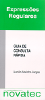

|  | Este guia foi editado e lançado pela Editora Novatec.
Apóie a causa do Conhecimento Livre e compre a versão impressa.
Veja no site do autor informações adicionais, ERRATA e livro de visitas. |
Eu, Aurélio, coloquei o Guia de Expressões Regulares inteiro e gratuito na Internet para ajudar as pessoas:
E considero essa iniciativa um sucesso completo. As vendas vão muito bem, uma média de um livro vendido por dia. Não é muito comparado a outros livros técnicos, mas quem imaginava que Expressões Regulares fosse vendável? Acredito que mesmo tendo o conteúdo na Internet, nada substitui a versatilidade, simplicidade e legibilidade de um livro impresso. Ainda mais nesse formato "de bolso", fácil de ler e carregar. Até eu tenho um! &:)
Tenho um saldo muito positivo de elogios e histórias de como o Guia na Internet tem ajudado muitos a entender e utilizar as Expressões Regulares. Essa satisfação é impagável. Essa recompensa satisfaz mais que os R$ 50,00 que caem na conta do banco todo mês. Podiam ser R$ 500,00, não importa. Só quem experimenta o que é um completo estranho te parabenizando e te tratando como um velho amigo sabe do que estou falando.
Porém, como sempre há uma pequena parcela de pessoas sem bom senso, seres que não sabem entender uma iniciativa dessas e respeitar o trabalho alheio. Alguns abusaram, abusaram muito até, então com muito desgosto e tristeza percebi que a liberdade precisa de regras para ser bem exercida.
Certo de que a minoria não estraga o todo, mantenho o Conhecimento Livre na Internet, mas agora com "as regras do jogo". Eu esperava nunca precisar fazer isso, mas plágio é caso de polícia e abuso eu não tolero, então:
DIREITOS AUTORAIS do GUIA EXPRESSÕES REGULARES
----------------------------------------------
Esta OBRA está disponível na Internet para CONSULTA apenas, e o
seu conteúdo está sob as regras descritas a seguir:
É PERMITIDA:
I. A replicação em meios digitais de uma amostra da OBRA, desde
que citado o NOME COMPLETO do autor e o ENDEREÇO OFICIAL de
consulta da OBRA.
II. A guarda de cópia pessoal das páginas HTML que compõem esta
versão ONLINE, seja armazenada eletronicamente ou impressa em
papel, desde que somente utilizadas para consulta pessoal,
estando proibida a sua divulgação pública em qualquer meio.
É PROIBIDA:
I. A replicação do conteúdo parcial ou integral da OBRA, em
qualquer meio ou formato, digital ou impresso, exceto a
amostra já citada.
II. A replicação de uma amostra da OBRA em meios digitais se
omitidos o NOME COMPLETO do autor e/ou o ENDEREÇO OFICIAL
de consulta da OBRA.
É REPUDIADA:
I. A replicação de conteúdo da OBRA por terceiros entitulando-se
"autores" da mesma.
II. A utilização de conteúdo da OBRA para fins comerciais.
DAS DEFINIÇÕES:
Para os itens anteriores, define-se:
I. OBRA:
A versão online do Guia Expressões Regulares,
ISBN: 85-7522-011-X, disponível na Internet para
consulta, no formato de várias páginas HTML.
Não conta como OBRA a versão impressa e distribuída
pela Editora Novatec, que possui Copyright próprio.
I. NOME COMPLETO do Autor:
Aurélio Marinho Jargas
II. ENDEREÇO OFICIAL de consulta da OBRA:
http://aurelio.net/er
DOS TERMOS:
Para os itens anteriores, entenda-se:
I. Como "amostra da OBRA" um texto total de no máximo 300
palavras, sem alterações, retiradas de um mesmo capítulo ou
como coletânea de vários, incluindo exemplos e trechos de
código.
II. Como "meios digitais": sites de Internet, homepages
pessoais, e-mail, documentos online, apostilas eletrônicas, e
todos os outros exemplos de mídia eletrônica (não impressa)
e pública existentes.
|
Em resumo, você é livre para consultar, baixar as páginas para ler
OFFLINE e imprimi-las.
Mas NÃO publique estas páginas em seu site, ao
invés disso coloque um link para
http://aurelio.net/er, a versão oficial e atualizada.
Você também pode divulgar (copiar/colar) trechos do guia por e-mail
ou no seu site,
desde que até 300 palavras e colocando o meu nome
completo e o link já citado.
Ou seja, para quem tem bom senso, nada muda.
Agora, daqueles que querem plagiar o meu trabalho, ou ganhar dinheiro
às minhas custas, eu tenho muita pena.
Vocês poderiam estar produzindo ao invés de parasitar.
Aurélio Marinho Jargas
Florianópolis, 2 de julho de 2003